3단 접힘선이 안 맞아서 인쇄소에서 다시 수정해달라는 연락을 받는다
매주 똑같은 예배 순서표를 처음부터 다시 만드느라 시간이 든다
절기가 바뀔 때마다 배경과 장식을 일일이 새로 찾아 넣는다
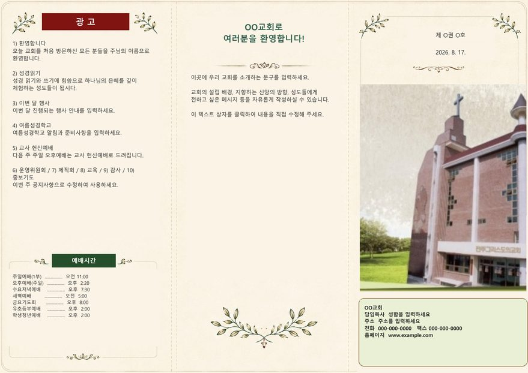
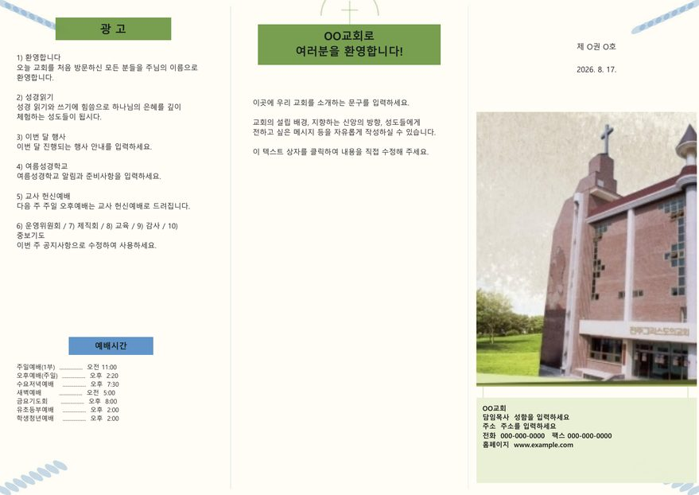
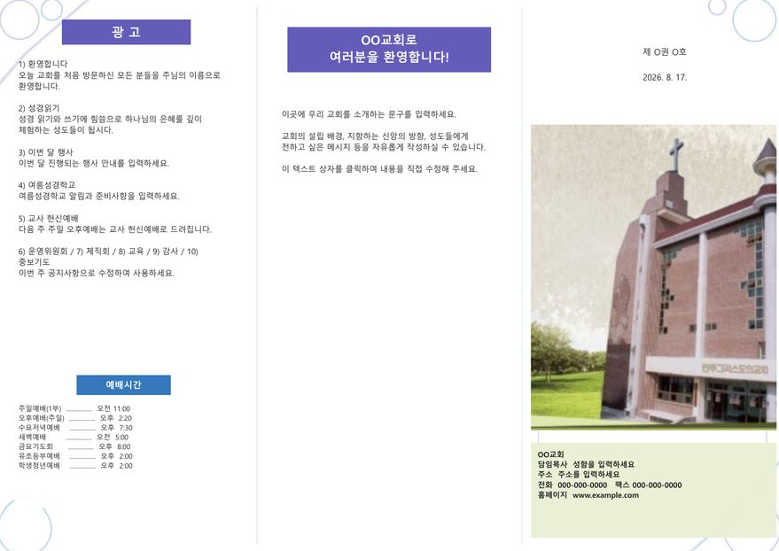
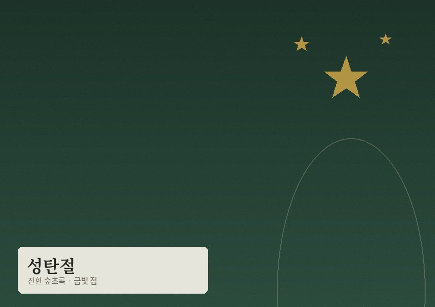
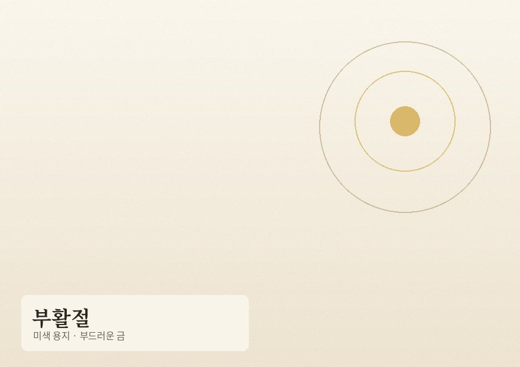
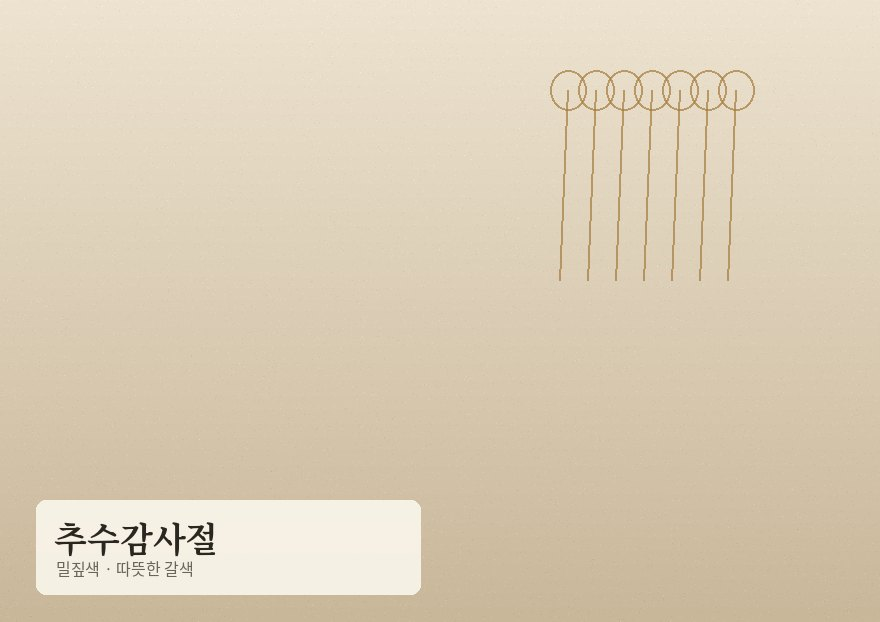
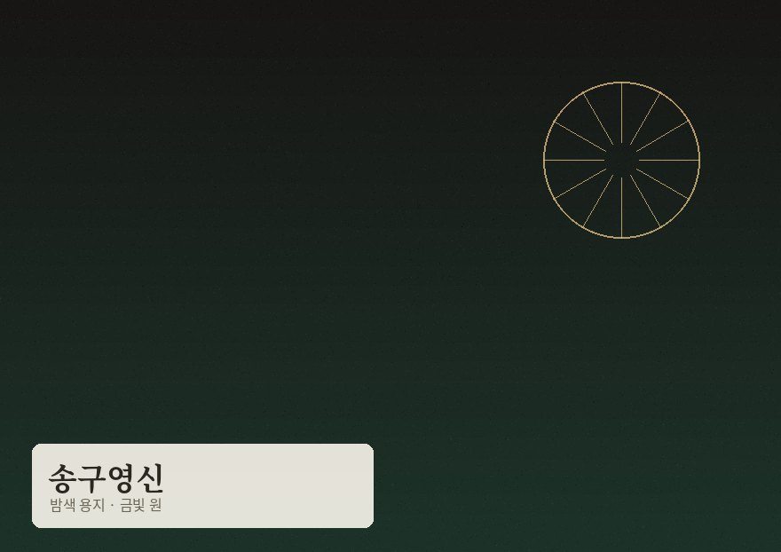
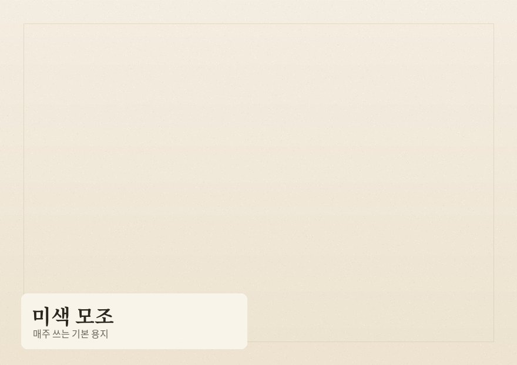
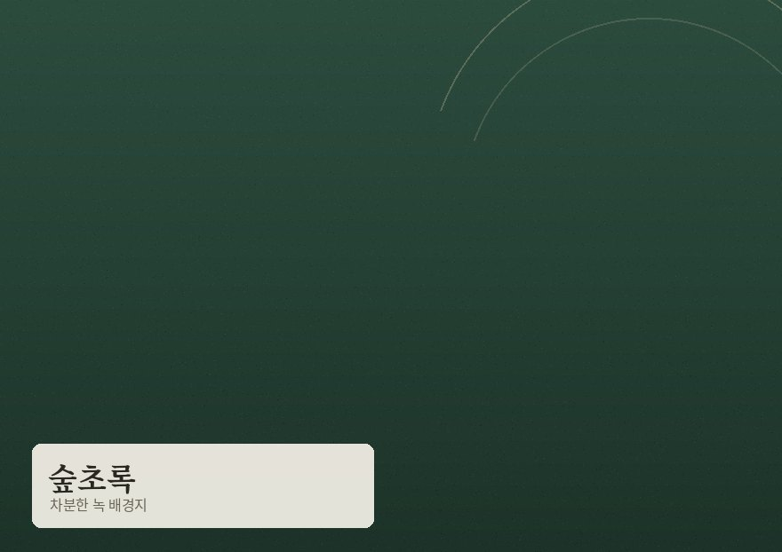
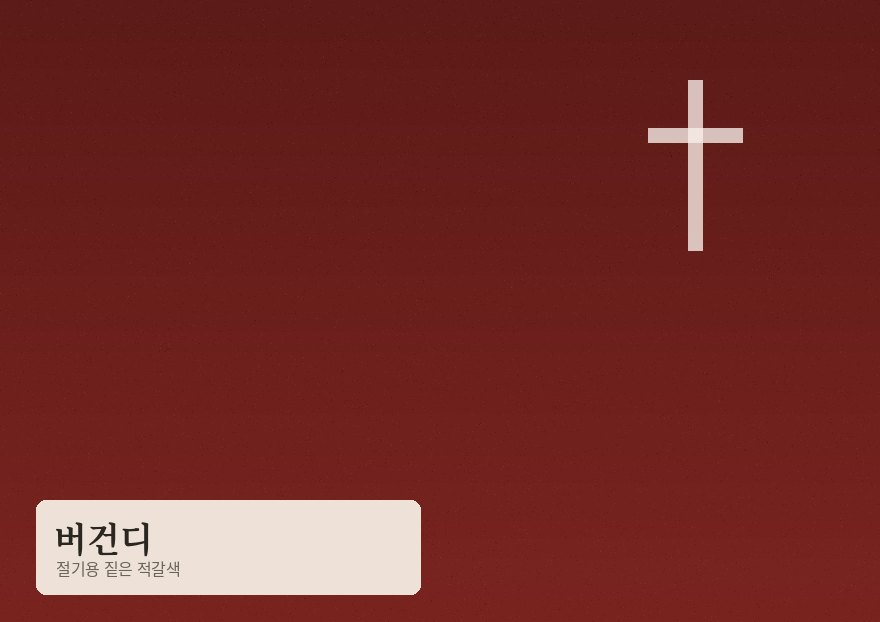
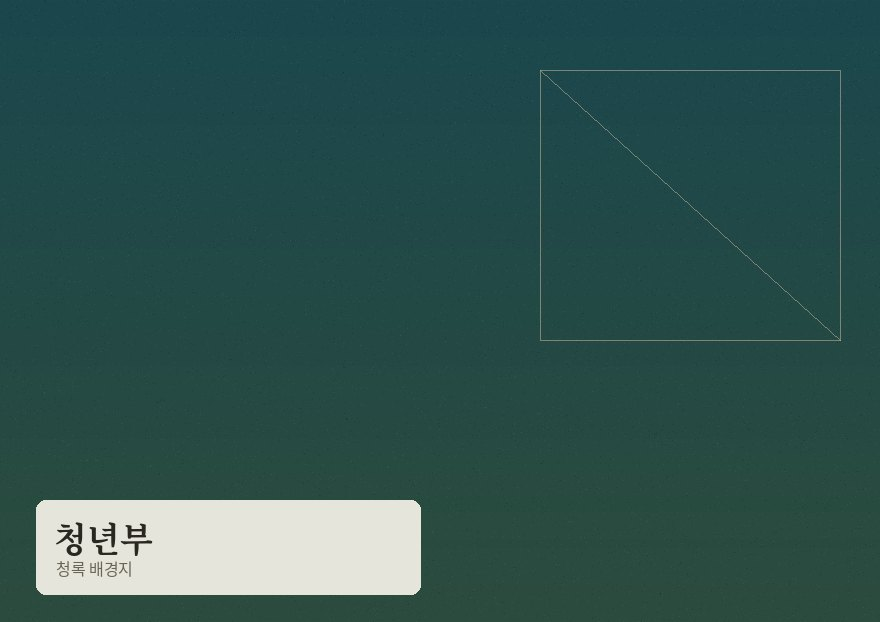
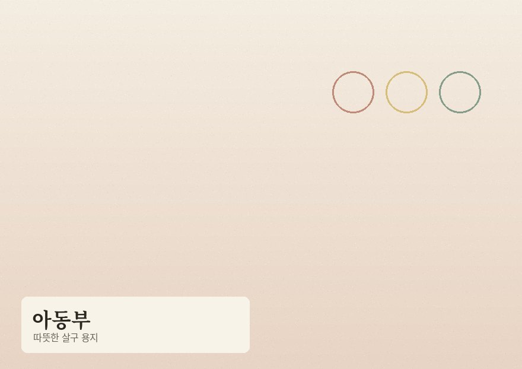
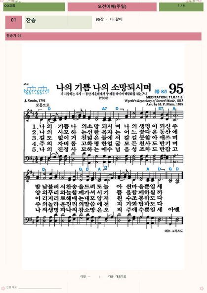
교단 주보와 큐카드는 실제 출력본입니다. 절기·배경지는 고르는 미리보기라, 프로그램 안 그림과 조금 다를 수 있습니다. 카드를 누르면 시리얼 신청으로 이어집니다.
장로교·개혁교회, 감리교·성결교, 침례교·순복음, 소형교회 심플형 중 골라서 바로 시작합니다. 예배 순서 내용만 다르고 화면 배치는 그대로라, 우리 교회에 맞게 손보기도 쉽습니다.
성탄절·부활절·추수감사절·송구영신 등 절기 배경과 청년부·아동부 같은 부서별 배경을 클릭 한 번으로 적용합니다. 기준 원본은 언제든 복원할 수 있습니다.
교회 사무실 프린터로 바로 뽑아도 되고, 인쇄소에 맡겨도 됩니다. 인쇄소에 맡길 때는 도련(bleed)과 재단선(trim mark)까지 포함된 고해상도 PDF를 따로 출력할 수 있어, 다시 수정해달라는 연락이 줄어듭니다.
완성한 주보 내용을 그대로 옮겨, 인도자가 들고 볼 수 있는 A5 예배진행카드(큐카드)를 자동으로 만들어 줍니다.
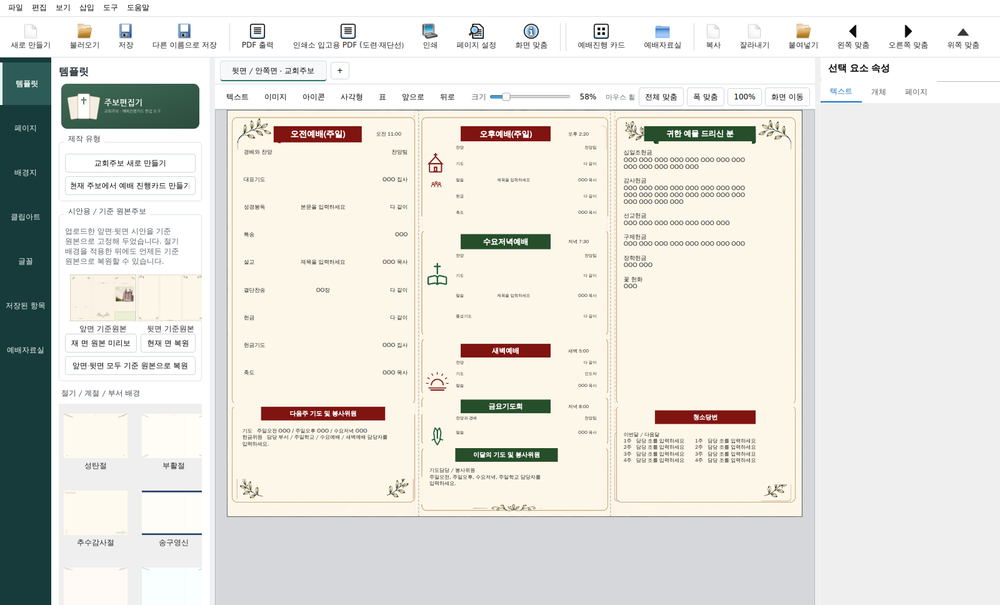
아래 버튼을 눌러 설치 파일(Setup.exe)을 받습니다. "안전하지 않을 수 있음" 같은 경고가 뜨면, 처음 배포된 프로그램이라 아직 안전 인증이 안 되어 나타나는 정상적인 경고입니다. "추가 정보 → 실행" 또는 "유지"를 눌러 진행하시면 됩니다.
다운로드한 파일을 더블클릭하고, 화면 안내를 따라가면 설치가 끝납니다.
설치 파일을 받으신 뒤, 신청 폼으로 교회명과 이메일을 남겨주시면 시리얼 번호를 보내드립니다.